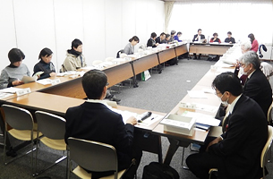

|
|
第53回埼玉県消費者大会実行委員会 1月12日(金)11時10分より、さいたま共済会館501にて第53回埼玉県消費者大会第7回実行委員会が開催され、18人(12団体)と事務局2人が出席しました。 【議題】 1．実行委員会立ち上げから大会当日までのふりかえり 事務局より実施報告書、参加者アンケート集計結果、各団体参加人数、第1回実行委員会から話し合ってきた内容について報告をおこないました。その後、各団体からのふりかえりの発言と、意見交換をおこないました。 2．第54回埼玉県消費者大会の運営体制について 事務局より、第54回大会実行委員会に引き継ぐ内容について提案し、運営体制、日程、会場、すすめ方などを確認しました。
3．埼玉県との懇談会のすすめ方について 実行委員会終了後、午後からおこなう｢埼玉県との懇談会｣のすすめ方、重点項目にあげた17項目の確認、内容を深めるための発言について話し合いをおこないました。 4．お知らせ
 |